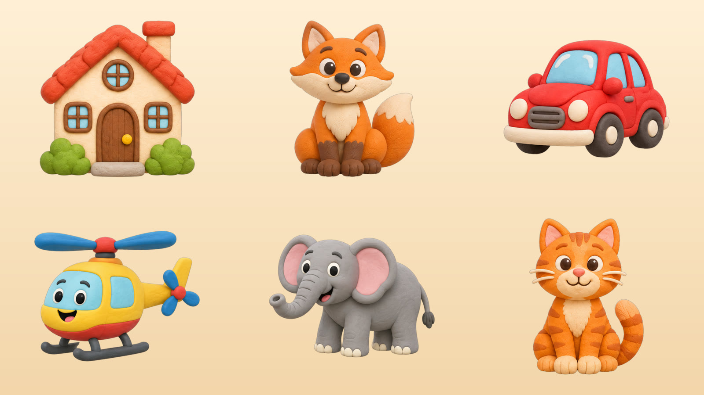

Базовая структура занятия (30–40 минут)
- Приветствие и настрой (2–3 минуты). Ритуал входа: песенка, привычное приветствие, обсуждение плана на картинках.
- Разминка (3–5 минут). Артикуляционная или дыхательная активность, которая включает ребёнка в работу.
- Основной блок (10–15 минут). Одна цель: слоговая структура, предлоги, связная речь, звукоподражания.
- Смена активности (3–5 минут). Что-то на внимание или память, движение.
- Закрепление и итог (5 минут). Повтор главного и понятная похвала.
- Домашнее задание для родителя. Один пункт, который можно сделать за 5 минут.
Что взять на каждый блок
- Разминка: «Дуем и плывём» (дыхание и голос), «Звуки и слоги» (артикуляция, ПА-ТА-КА).
- Слоги и слова: «Слоговая структура слова», 4 уровня от «дом» до «крокодил».
- Грамматика: «Где мячик?» (предлоги), «Чья вещь?» (род, число, падежи).
- Связная речь: «Рассказываем по картинкам», «Один день в детском саду».
- Внимание и память: «Найди пару», «Что звучит?».

Особенности онлайн-формата
- Короткие задания. Лучше три разных за 10 минут, чем одно долгое.
- Действие на экране. Ребёнок перетаскивает, выбирает, слушает: вовлечённость выше, чем при просмотре.
- Роль родителя. Объясните заранее, что его задача: сидеть рядом, не подсказывать, не поправлять резко, хвалить за попытку.
- Паузы и ожидание. После вопроса дождитесь 3–5 секунд: это важно для запуска ответа.
- Техника. Проверьте звук и микрофон заранее, подготовьте запасное задание на случай сбоя.
Как оценивать результат
В части занятий есть режим «Диагностика» без подсказок: он помогает увидеть, как ребёнок справляется самостоятельно. Это ориентир для вашей работы, а не заключение: речевое обследование проводит специалист по своим методикам.
Занятия не заменяют логопедическое обследование и работу специалиста: это материал для вашей работы, а не диагностика.
Вопросы и ответы
Сколько длится онлайн-занятие с дошкольником?
Обычно 20–40 минут в зависимости от возраста и возможностей ребёнка, с частой сменой активности.
Нужно ли присутствие родителя?
Для малышей да, это важно. Родитель повторяет задания дома и поддерживает ребёнка.
Как удержать внимание онлайн?
Короткие блоки, действие на экране, смена заданий и понятная похвала.
Статья носит общий информационный характер, не заменяет консультацию специалиста и не ставит диагноз: диагноз ставит врач. Если вы тревожитесь за ребёнка, обратитесь к педиатру, неврологу или другому врачу.
Если вы логопед и хотите видеть материалы Александры первыми, подписывайтесь в Telegram и VK.
Telegram VK